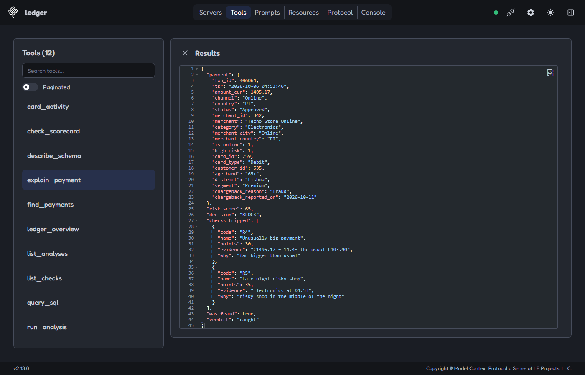

Where does the money go, and how do you catch a card thief?
We followed a year of card payments at Meridian Bank, a made-up Portuguese bank, to see how people spend and how fraudsters try to steal. Then we built six simple checks that spot fraud the moment it happens.
New: ask an AI assistant about this dataIn short
How people spend
Everyday card payments from 1,500 customers.
Spending month by month
December shopping and the summer holidays are the busiest times. Hover a bar for details.
What people spend on
Out of every €100 spent on cards.
Tapping is taking over
How many shop payments are made by tapping the card, and how many payments are made online.
When people pay
Each square is one hour of the week. Darker means busier.
Who spends the most
Average card spending per customer, per month.
How fraud happens
Fraud means a customer later told the bank: “that wasn't me”.
Money stolen each month
Hover a month to see how many cards were hit.
How the money is stolen
The orange bar is the share of stolen money. The outline is the share of all payments, for comparison.
How long until people notice
Days between the stolen payment and the customer reporting it.
The riskiest kinds of payment
Where the most money was stolen, and how often a payment of that kind turned out to be fraud.
How we catch it
Six simple checks look at every payment. Each one gives points when something looks off.
Adding up the points
Try it: how strict should the bank be?
Stricter catches more thieves, but also stops more honest customers. Move the slider to find the balance.
Stop payments that score points or more
As the bank gets stricter (to the right), it stops more stolen money (orange), but fewer of the payments it stops are really fraud (blue).
Real examples
Six payments the checks flagged, and what really happened.
Ask an AI about it
Connect Claude, or another AI assistant, and ask questions in your own words. It looks the answers up in the real data instead of guessing.
It was a €1,495 online purchase at an electronics shop at 4:53 in the morning, on the debit card of a customer aged 65+ from Lisboa.
Two checks fired: Unusually big payment (+30 points, 14 times what this card usually spends) and Late-night risky shop (+35). That makes 65 points, over the 60 needed to stop it.
The customer reported it as fraud five days later, so stopping it was the right call. It looks like a hijacked account.
It would stop 88% of the stolen money automatically instead of 77%. But it would also stop 253 honest payments a year instead of 11, so many more customers would get a call.
Things you can ask
What it can do
- Answer questions about spending, customers and fraud, with real numbers
- Explain a decision: why a payment was stopped, and whether it really was fraud
- Find the mistakes: fraud that slipped through, and honest customers who were stopped
- Try changes safely: stricter or looser checks, before anyone changes anything
It can only look. It never changes the data.
Set it up in three steps
You need Python 3.12 or newer and Git. It runs on your own computer.
-
Download Ledger and build its data (about a minute)
git clone https://github.com/DiogoS7/Ledger.git cd Ledger pip install -e ".[mcp]" python -m ledger
On Windows, if python is not found, type py instead.
-
Connect your AI assistant
In Claude Desktop, open Settings → Developer → Edit Config, add this, save and restart Claude. On Windows, put Python's full path in command: run py -c "import sys; print(sys.executable)" and use what it prints, with each \ written twice. On a Mac, use the path from which python3.
{ "mcpServers": { "ledger": { "command": "python", "args": ["-m", "ledger", "mcp"] } } }In a terminal:
claude mcp add ledger -- python -m ledger mcp
-
Ask away
Start a new chat and try one of the questions above. Claude will say it is using Ledger when it looks something up.
For the technical reader: the MCP server
Ledger includes an MCP server (ledger/mcp) with 12 read-only tools, 2 resources and 2 prompts. It uses the same SQL checks, scoring and points system as this page. The database is opened read-only, and free-form SQL is limited to single SELECT queries with a read-only authorizer, a row cap and a time limit.

For the technical readerFull scorecard, tuning, SQL and how the data was made
Scorecard
Precision: share of alerts that were fraud. Recall: share of fraud payments caught. Value caught: share of stolen euros caught. Lift: how much likelier an alert is to be fraud than a random payment.
Tuning one check at a time
Precision (blue) and recall (green) as each check's main setting changes. The ringed point is the setting used.
The SQL behind each check
About the data
All data is synthetic and seeded, so python -m ledger always rebuilds the same SQLite database (customers, cards, merchants, transactions, chargebacks) and this page. Three kinds of attack are planted in it, and every approved fraudulent payment gets a chargeback with reason fraud, which is what the checks are scored against. Built with Python, pandas, SQLite and plain JavaScript charts.